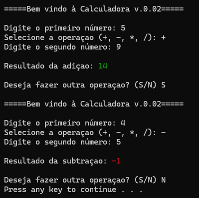

C++ Calculator

A command-line calculator that performs fundamental arithmetic operations. Built with C++, it features a continuous execution loop for multiple calculations and utilizes control flow logic to dynamically change the terminal output color based on whether the result is positive, negative, or zero.
- C++
- Control Flow (if/else)
- do-while loops
- Dynamic Terminal Styling (ANSI)